AI Agent 自主代理三王實戰
CH1 | 打好地基——帳號與工具全準備
安裝 AI 工具就像組裝電腦——先把所有「零件」備齊，後面才能順利開工。
這一章把帳號、密鑰、工具設定一次搞定！
📋 本章學習目標
- 確認電腦是否符合系統需求
- 擁有一組可用的 Gmail 帳號
- 在 LINE Developers 建立 Messaging API Channel，取得三組關鍵資料
- 在 Telegram 建立 Bot，取得 Bot Token
- 至少取得一個 AI 模型 API Key（推薦 Gemini 免費方案）
- 註冊 ngrok 帳號與 GitHub 帳號
- 安裝 Google Antigravity 並完成初始設定
- 了解 API Key 的安全觀念
1.1 系統需求確認
好消息是：要求不高！只要你的電腦能正常上網、能打字，基本上就夠了。
硬體需求
| 項目 | 最低需求 | 建議配備 |
|---|---|---|
| 作業系統 | Windows 10 / macOS 12 / Ubuntu 22 | Windows 11（本書主要示範） |
| 記憶體（RAM） | 4 GB | 8 GB 以上 |
| 硬碟空間 | 2 GB 可用空間 | 5 GB 以上 |
| 網路 | 能上網 | 穩定的寬頻網路 |
確認你的 Windows 版本
步驟 1 按下 Windows 鍵 + R，在「執行」視窗輸入 winver，按 Enter。
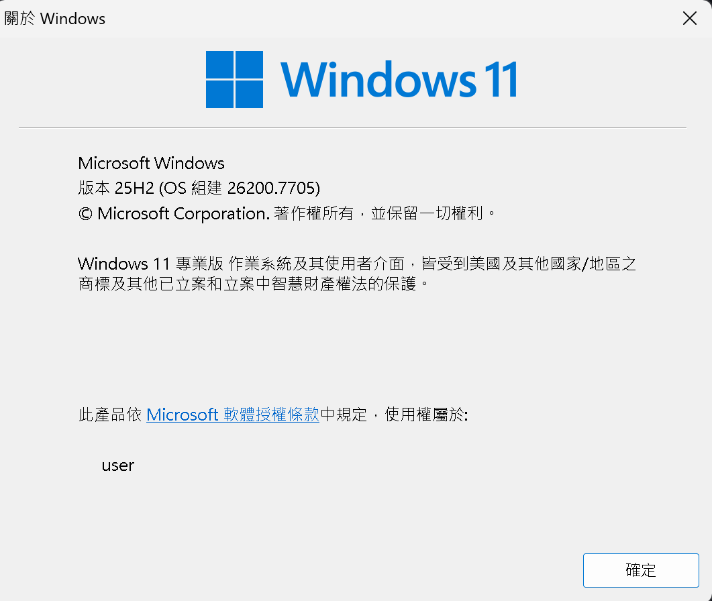
軟體環境總覽（這一章先不用安裝）
| 軟體 | 用途 | 什麼時候安裝 |
|---|---|---|
| Node.js v22+ | OpenClaw 的運行環境 | CH5 安裝龍蝦時 |
| ngrok | 讓 LINE 能連到你的電腦 | CH5 安裝龍蝦時 |
| Git | 程式碼版本控制 | CH3 Claude Code 時 |
| Google Antigravity | AI 開發環境 | CH1 本章安裝 + CH2 詳細教學 |
1.2 Gmail 帳號申請
Gmail 是後面幾乎所有服務的「萬用通行證」——LINE Developers、Google AI Studio、OpenAI、GitHub、ngrok⋯⋯幾乎所有平台都支援「用 Google 帳號一鍵登入」。
申請步驟
步驟 1 打開瀏覽器，前往 https://accounts.google.com/signup
步驟 2 依序填入以下資料：
| 欄位 | 怎麼填 | 範例 |
|---|---|---|
| 名字 | 你的名字 | 小明 |
| 姓氏 | 你的姓氏 | 王 |
| 使用者名稱 | 你想要的 Email 名稱 | wangming2026 |
| 密碼 | 至少 8 個字元，建議英數混合 | MyP@ss1234 |
| 確認密碼 | 再輸入一次密碼 | MyP@ss1234 |
步驟 3 點「下一步」，填寫手機號碼（方便日後找回密碼）。
步驟 4 閱讀並同意服務條款，點「我同意」即可完成。
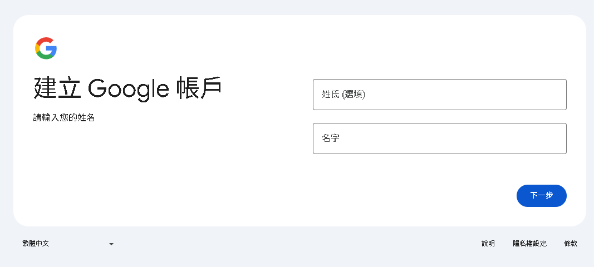
password123 這種容易被猜到的密碼。建議用英文大小寫 + 數字 + 符號的組合。
📝 記下來！ Gmail 帳號：_______________@gmail.com Gmail 密碼：_______________3 / 14
1.3 LINE 機器人申請（上）——登入與建立 Provider
這一段是本章最關鍵的部分。我們要在 LINE 官方帳號管理後台建立一個 Messaging API Channel——簡單來說就是替龍蝦在 LINE 上開一個帳號。完成後，你會拿到三組重要資料：
🔑 Channel ID
一串純數字，就像機器人的「身份證號碼」
🔐 Channel Secret
英數混合字串，用來驗證訊息來源
🎫 Access Token
超長字串，機器人的「通行證」
步驟 1：登入 LINE 官方帳號管理後台
打開瀏覽器，前往 https://manager.line.biz/，點右上角 Log in。推薦選擇「用 LINE 帳號登入」——就是你手機上平常用的 LINE。
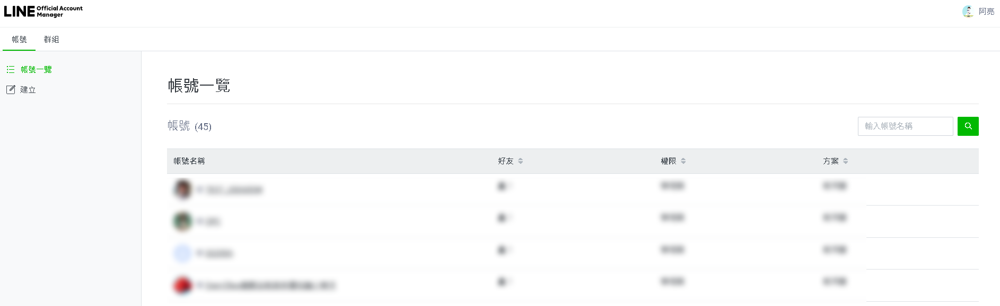
步驟 2：建立 Provider
Provider 是一個「組織」的概念——一個 Provider 底下可以有很多個機器人。點 Create，輸入名稱（例如「我的AI助手」、「龍蝦工作室」），然後確認。
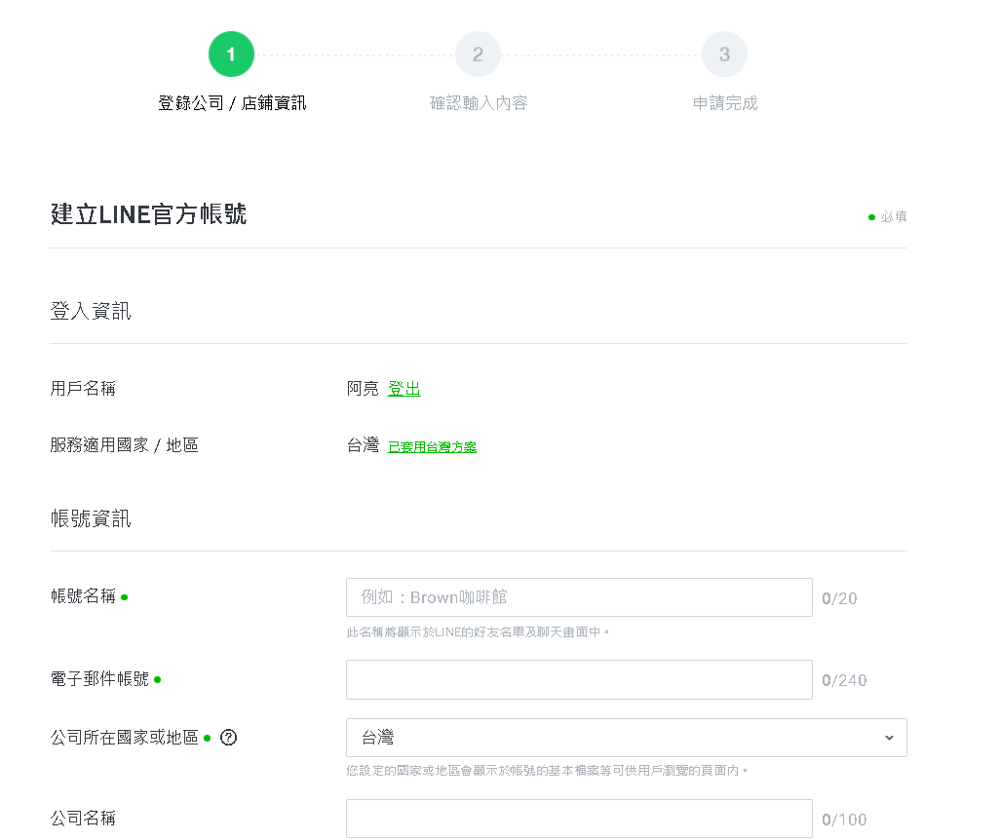
1.3 LINE 機器人申請（中）——建立 Channel
步驟 3：建立 Messaging API Channel
點進 Provider 後，點 Create a Messaging API channel，填寫以下表單：
| 欄位 | 怎麼填 | 範例 |
|---|---|---|
| Channel type | 已自動選好，不用改 | Messaging API |
| Company or owner's country | 選 Taiwan | Taiwan |
| Channel name | 機器人的顯示名稱 | 龍蝦小助手 |
| Channel description | 簡短說明 | 我的AI聊天機器人 |
| Category / Subcategory | 選一個接近的類別 | Education / School |
| Email address | 你的 Email | yourname@gmail.com |
填好後勾選同意條款，點 Create。
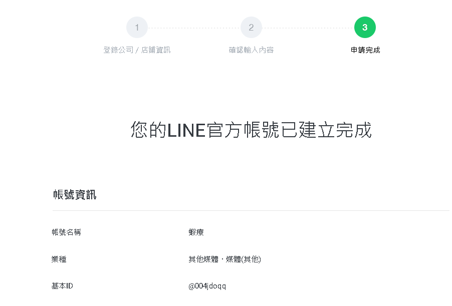
步驟 4：取得 Channel ID 和 Channel Secret
在 Basic settings 頁面，你可以找到 Channel ID（純數字）和 Channel Secret（英數混合），把它們複製到記事本。
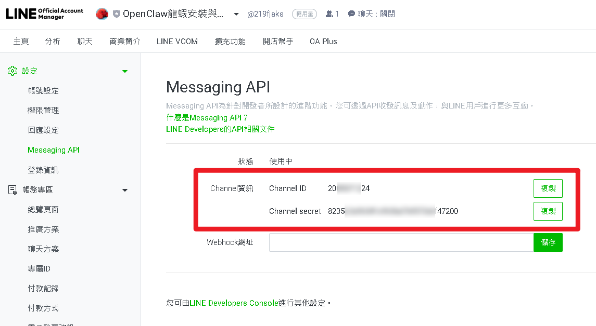
📝 記下來！ Channel ID：_______________ Channel Secret：_______________5 / 14
1.3 LINE 機器人申請（下）——Token 與自動回覆
步驟 5：取得 Channel Access Token
切換到上方的 Messaging API 標籤，一路往下滑到最底部，找到 Channel access token (long-lived)，點 Issue 按鈕產生 Token，然後完整複製。
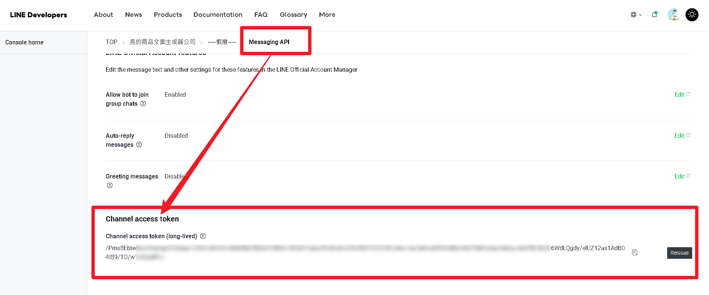
步驟 6：關閉自動回覆——千萬不能忘！
LINE 預設會開啟「自動回覆」，會跟龍蝦的回覆打架，每次收到雙重回覆。我們必須關掉它：
- 在 Channel 的 Messaging API 標籤，找到 Auto-reply messages，點 Edit
- 在「回應設定」頁面調整以下三項：
| 設定項目 | 改成 |
|---|---|
| 回應模式 | Bot |
| 自動回應訊息 | 停用 |
| Webhook | 啟用 |
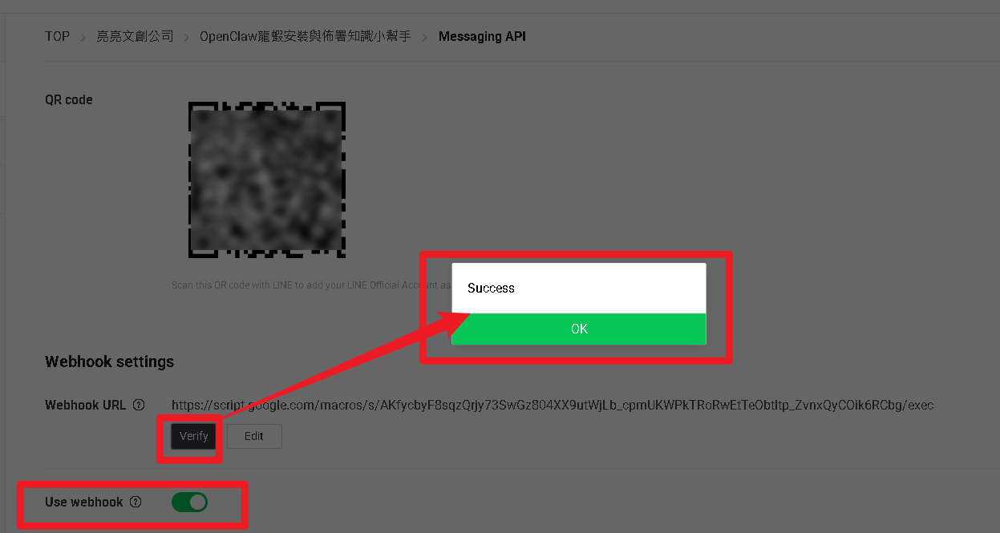
📝 記下來！ Channel Access Token：_______________6 / 14
1.4 Telegram Bot 申請
比起 LINE 的繁複步驟，Telegram 簡直是一陣清風。不需要開發者帳號、不需要填表單——跟 @BotFather 聊天，一分鐘就能建好！
步驟 1-2：搜尋 BotFather 並開啟建立表單
在 Telegram 搜尋欄輸入 BotFather，找到帶藍色勾勾的 @BotFather，點 Open App（或 START），會出現 New bot 建立表單。
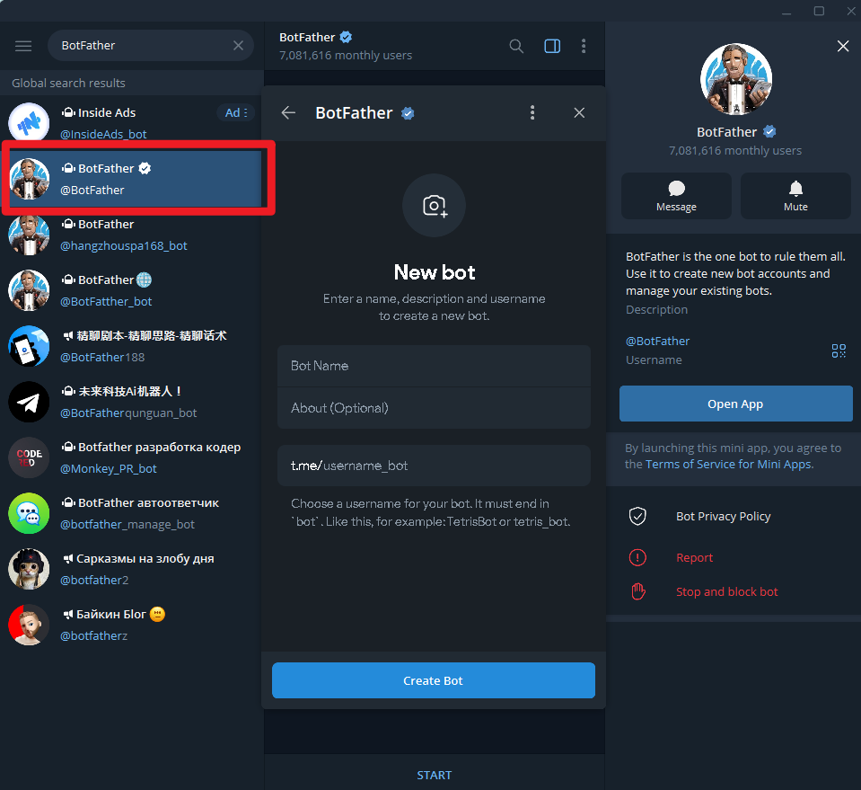
步驟 3-4：填寫表單並建立
| 欄位 | 怎麼填 | 範例 |
|---|---|---|
| Bot Name | 機器人的顯示名稱，隨便取 | 龍蝦小助手 |
| About（選填） | 簡短說明 | 阿亮老師的龍蝦AI |
| t.me/username_bot | 帳號名稱，結尾必須是 bot | my_lobster_ai_bot |
填好後點 Create Bot。
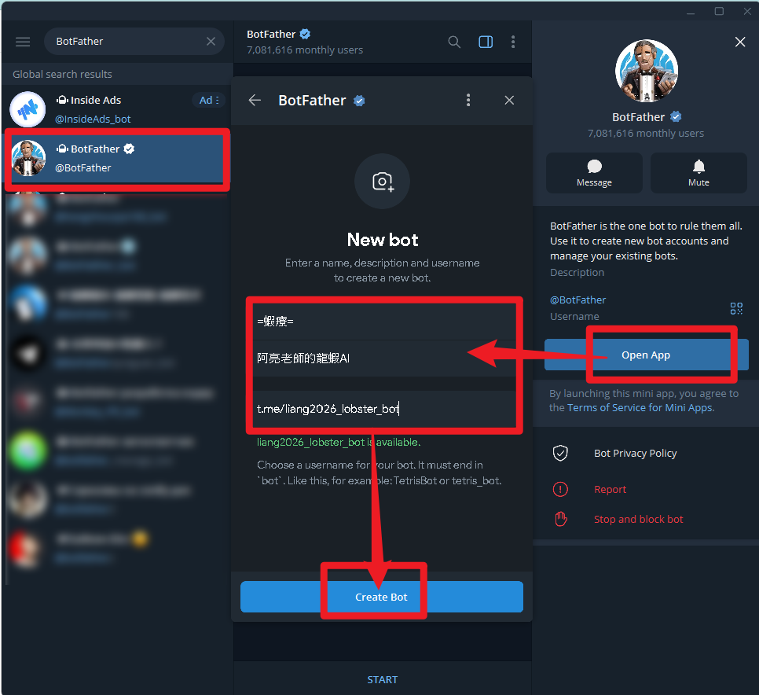
步驟 5：取得 Bot Token
建立成功！BotFather 會顯示你的 Bot Token，點 Copy 複製下來。

📝 記下來！ Telegram Bot Token：_______________7 / 14
1.5 AI 模型 API Key（一）——Google Gemini
OpenClaw 本身不是 AI，它是一個框架（身體）。身體裡面需要裝一顆「腦」才能運作——這顆腦就是 AI 模型的 API Key。
| 模型 | 提供商 | 費用 | 推薦指數 | 適合對象 |
|---|---|---|---|---|
| Gemini | 免費額度充足 | ⭐⭐⭐⭐⭐ | 新手首選 | |
| GPT | OpenAI | 需儲值 US$5 起 | ⭐⭐⭐⭐ | 想用最強模型 |
| Claude | Anthropic | 需儲值 US$5 起 | ⭐⭐⭐⭐ | 用 Claude Code 的人 |
| Ollama | 社群開源 | 完全免費 | ⭐⭐⭐ | 有獨顯的技術愛好者 |
Gemini API Key 申請步驟
步驟 1 前往 https://aistudio.google.com/，用 Gmail 登入。
步驟 2 點左側 Get API key（或直接前往 https://aistudio.google.com/apikey）。
步驟 3 點 Create API key → Create API key in new project。
步驟 4 API Key 產生後立刻複製！
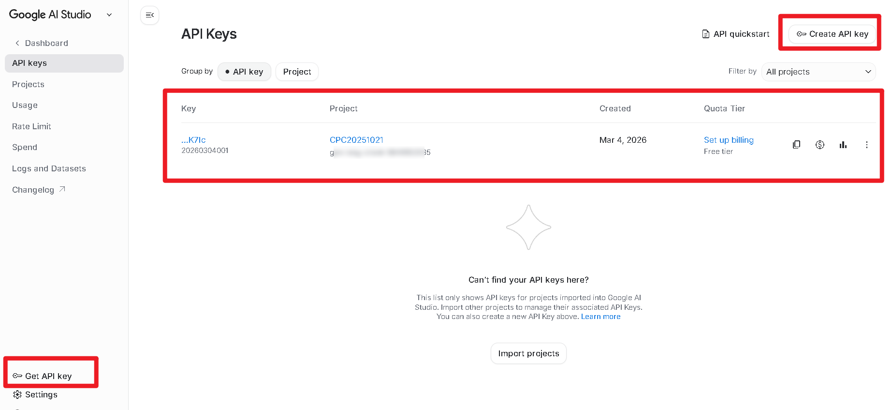
📝 記下來！ Google AI API Key：_______________（以 AIza 開頭）8 / 14
1.5 AI 模型 API Key（二）——OpenAI 與 Anthropic
這兩個是選用的付費方案。如果只想先用免費方案，可以直接跳到下一張投影片。
🟢 OpenAI GPT
1 前往 platform.openai.com
（注意不是 chat.openai.com！）
2 用 Google 帳號註冊
3 Settings → Billing，加入信用卡並儲值 US$5（約台幣 160 元，夠用 1000+ 次對話）
4 API keys → Create new secret key，取名為 lobster-ai
5 立刻複製！OpenAI 的 Key 只會顯示一次
OpenAI API Key：sk-___________
🟣 Anthropic Claude
1 前往 console.anthropic.com
2 用 Google 或 GitHub 帳號註冊
3 Settings → Billing，加入信用卡並儲值 US$5
4 API keys → Create Key，取名後複製
推薦模型：
- Claude Opus 4.6：最強，適合複雜任務
- Claude Sonnet 4.6：性價比高，日常使用
Anthropic API Key：sk-ant-___________
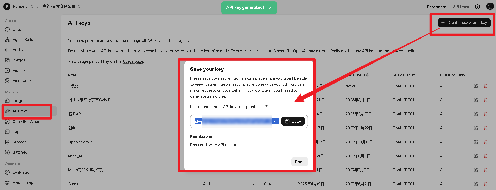
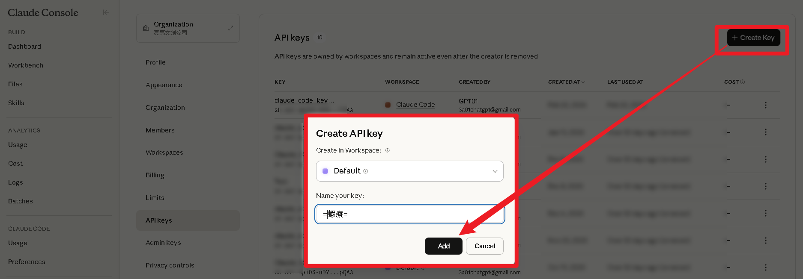
9 / 141.6 ngrok 帳號申請
ngrok 是一條「隧道」——它把你電腦上的龍蝦服務打通到外面，讓 LINE 伺服器能夠連進來。
LINE 伺服器（日本） 🇯🇵
↕ ngrok 隧道（打通內外）🔗
你的電腦（龍蝦在 localhost:18789 上運行）💻
申請步驟
步驟 1 前往 https://dashboard.ngrok.com/signup，推薦用 Google 帳號一鍵註冊。
步驟 2 註冊完成後進入 Dashboard，點左側 Your Authtoken，複製 Authtoken。
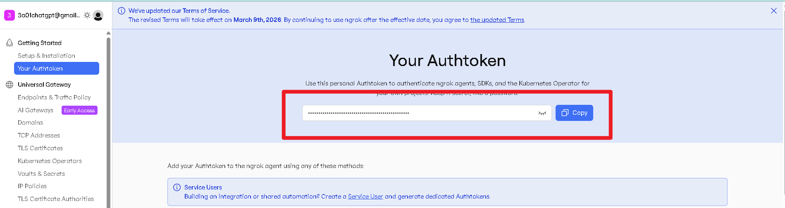
📝 記下來！ ngrok Authtoken：_______________10 / 14
1.7 GitHub 帳號申請
GitHub 是全球最大的程式碼托管平台。在這本書裡，它有兩個重要用途：
☁️ GitHub Codespaces
CH5 會教。免費的雲端開發環境，在瀏覽器裡跑龍蝦——不需要本機安裝。每月免費 60 小時。
🤖 Claude Code
CH3 會教。Claude Code 需要用 Git 來管理檔案版本，Git 的遠端倉庫通常就託管在 GitHub 上。
註冊步驟
步驟 1 前往 https://github.com/signup
步驟 2 依序填寫 Email（Gmail）、密碼、使用者名稱，通過人機驗證。
步驟 3 到 Gmail 收驗證信，點確認連結。
步驟 4 選擇方案：選 Free（免費），已包含所有需要的功能。
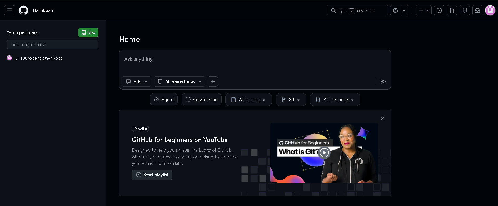
📝 記下來！ GitHub 帳號：_______________ GitHub 密碼：_______________11 / 14
1.8 Antigravity 安裝與設定
Antigravity 是 Google 推出的 AI 開發環境，完全免費、內建 Gemini 模型，不需要另外申請 API Key。安裝過程跟裝 VS Code 一樣簡單！
下載與安裝
步驟 1 前往 https://antigravity.google/，點 Download 下載安裝檔。
步驟 2 執行下載的 .exe 安裝檔，照著提示完成安裝。
步驟 3 開啟 Antigravity，用你的 Google 帳號登入（第一次會要求授權，點「允許」）。
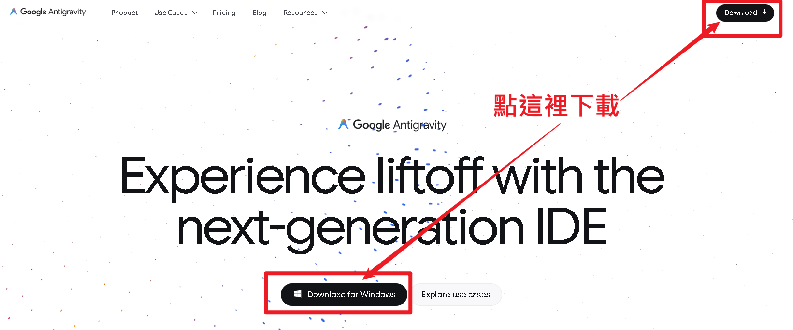
選擇開發模式（重要！）
步驟 1 首次啟動出現開發模式選擇，請選 Agent-driven development。
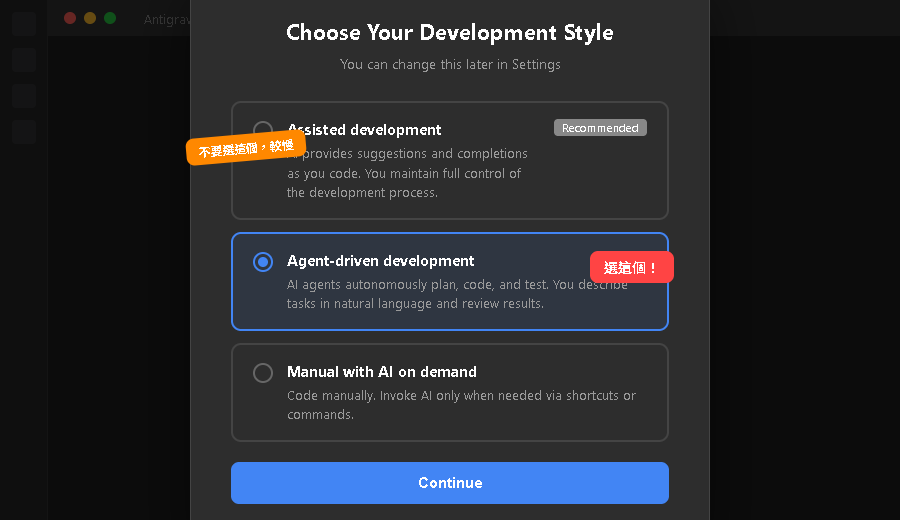
安裝繁體中文介面
步驟 1 點左側的延伸模組圖示（四方塊圖案），或按 Ctrl+Shift+X。
步驟 2 在搜尋框輸入 Chinese，找到 Chinese (Traditional) Language Pack，點 Install。
步驟 3 安裝完成後點 Restart 重啟，介面即變為繁體中文。
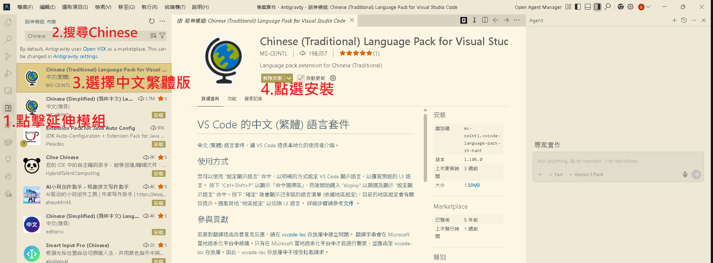
使用小提醒
📂 先建資料夾再開專案
開始新專案前，先在桌面建一個獨立的空資料夾，避免 AI 意外修改到其他檔案。
📊 查看帳號額度
按 Ctrl+Shift+Q 查看帳號概況和 AI 額度使用情形。完全免費，不用擔心！
1.9 安全須知 + 帳號準備清單
🔒 API Key = 提款卡密碼
曾有人不小心把 API Key 上傳到 GitHub，不到 24 小時被盜用，帳單飆到 US$1,200（約台幣 38,000 元）！
✅ 應該做的事
- 把 Key 存在加密檔案裡（例如 7-Zip）
- 用完記事本就關掉
- 在 OpenAI 設定每月用量上限
- 懷疑洩露就立刻重新產生 Key
❌ 千萬不要做
- 把 Key 貼在公開社群
- 把含 Key 的檔案上傳 GitHub
- 多人共用一組 Key
- 把 Key 用 Email 寄給自己
📋 帳號準備總清單
| 服務 | 需要的資料 | 狀態 |
|---|---|---|
| Gmail | 帳號 + 密碼 | ☐ |
| LINE Developers | Channel ID + Secret + Access Token | ☐ |
| LINE 回應設定 | 關閉自動回覆 + 啟用 Webhook | ☐ |
| Telegram Bot | Bot Token | ☐ |
| Google Gemini | API Key（AIza 開頭） | ☐ ★推薦 |
| OpenAI（選用） | API Key（sk- 開頭） | ☐ |
| Anthropic（選用） | API Key（sk-ant- 開頭） | ☐ |
| ngrok | Authtoken | ☐ |
| GitHub | 帳號 + 密碼 | ☐ |
| Google Antigravity | 下載安裝 + Google 登入 | ☐ |
1.11 小結與展望
恭喜你完成了全書最「苦工」的一章！🎉
✅ 系統確認
確認了 Windows 版本與硬體需求
✅ Gmail
準備好萬用通行證
✅ LINE 機器人
取得三組資料，關閉自動回覆
✅ Telegram Bot
跟 BotFather 建立機器人
✅ AI API Key
至少取得 Gemini 免費金鑰
✅ ngrok + GitHub
隧道工具與雲端平台帳號
✅ Antigravity
安裝 AI 開發環境，選 Agent-driven 模式
📖 下一章預告：CH2 你的 AI 工程師——Antigravity 實戰
食材都備齊了，從下一章開始正式開火！你將學會如何用 Antigravity 的圖形化介面跟 AI 協作、派出多個 Agent 同時工作、用自然語言建立完整應用程式。
原來「寫程式」可以像跟朋友聊天一樣簡單！